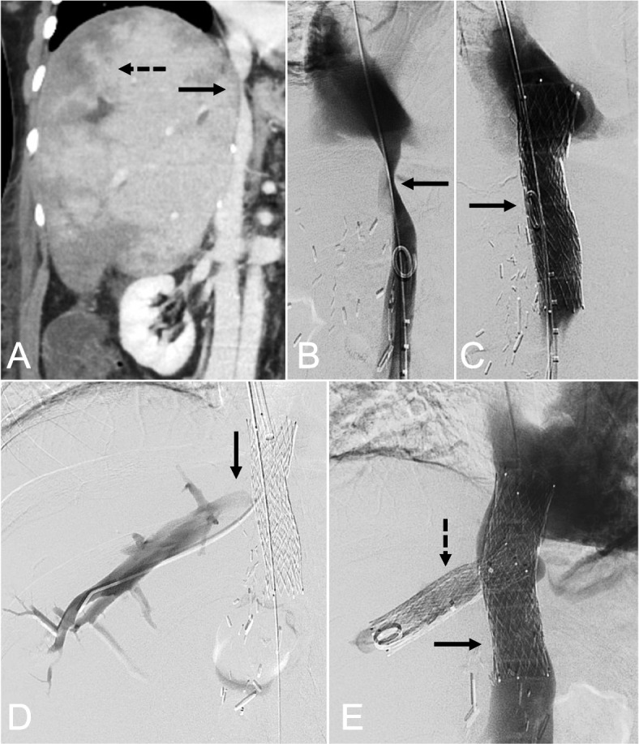
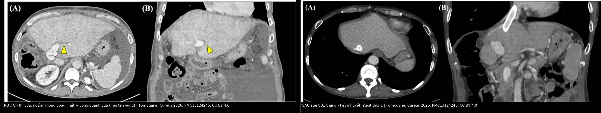
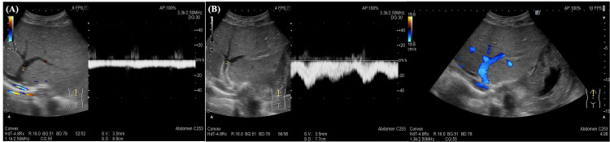
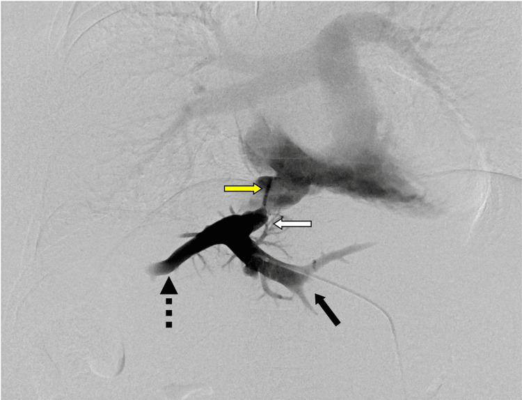
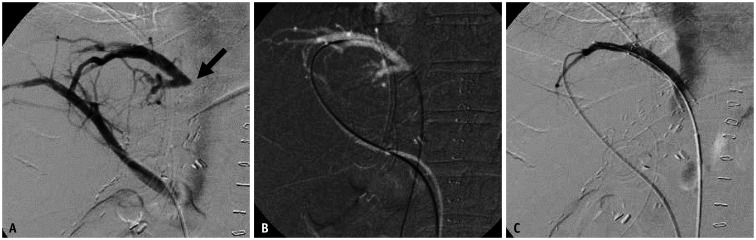
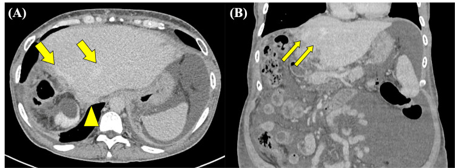
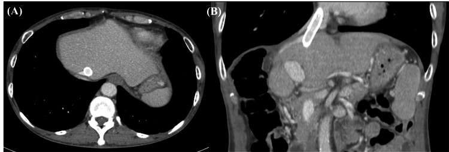
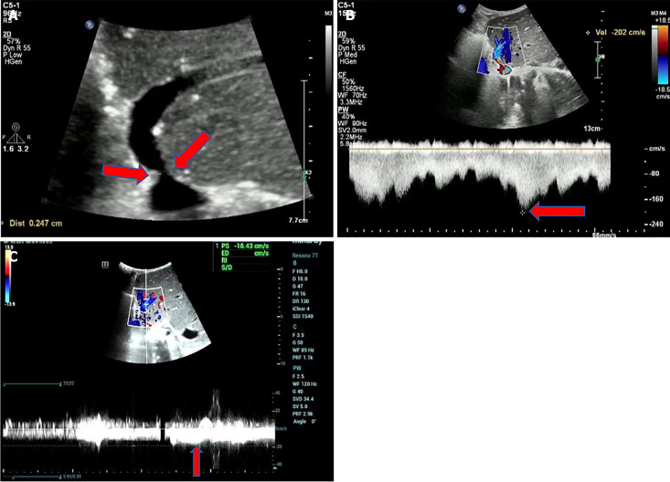
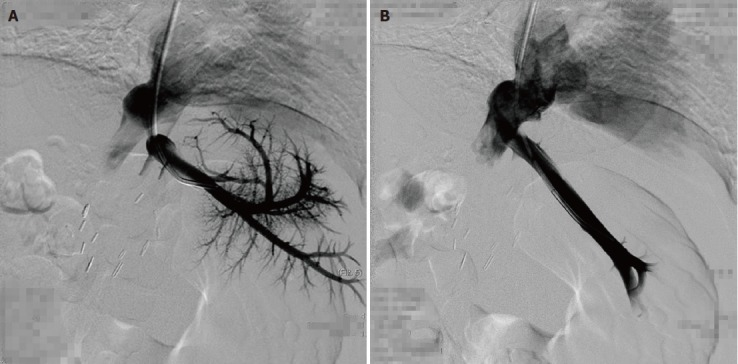

1906 — Hẹp dòng ra tĩnh mạch gan sau ghép gan: ngấm thuốc "không đồng nhất", mất sóng ba pha & ngưỡng chênh áp 5 mmHg / Hepatic venous outflow obstruction after liver transplantation
Tags: pattern:gan-ung-huyet pattern:ngam-khong-dong-nhat pattern:hep-mieng-noi pattern:huyet-khoi pattern:mat-song-ba-pha vung:gan vung:tm-gan vung:tm-chu-duoi vung:mieng-noi score:gradient-ap-luc protocol:Doppler protocol:CT-3-thi protocol:CTAP protocol:venography-do-ap-luc protocol:stent
Mức chắc chắn (certainty): tổng hợp y văn (literature synthesis) — số liệu lấy từ 6 bài open-access có ảnh gốc, mỗi bài đã đọc toàn văn: Tomogane et al., Cureus 2026 (PMC13124245, CC BY 4.0 — ca nguyên văn, 10 hình); Zhao et al., World J Gastroenterol 2025 (PMC11886290, CC BY-NC 4.0 — tổng quan siêu âm); Ko et al., Korean J Radiol 2021 (PMC8236365, CC BY-NC 4.0 — tổng quan can thiệp); Zhang et al., World J Gastroenterol 2017 (PMC5739929, CC BY-NC 4.0 — 5 trẻ); Giang et al., CVIR Endovasc 2025 (PMC12397019, CC BY 4.0 — stent chủ–gan); Le et al., Ann Hepatobiliary Pancreat Surg 2025 (PMC12643804, CC BY 4.0 — 52 ca LDLT). Bài không có ca nguyên văn riêng của nhóm; ca 1 là ca nguyên văn của nguồn (giữ đúng mô tả gốc, ghi rõ Fig).
Câu hỏi gốc của bài: bệnh nhân 2 năm sau ghép gan (hoặc 3 ngày sau ghép), tăng 7 kg trong 1 tháng, cổ trướng nhiều, men gan không tăng nhiều; siêu âm thấy sóng tĩnh mạch gan mất ba pha; CT thì cửa thấy gan ngấm thuốc lổn nhổn từng vùng, có "vòng" giảm ngấm quanh các nhánh cửa, và tĩnh mạch gan giãn, sáng hơn tĩnh mạch chủ dưới. Vậy: hẹp ở đâu — miệng nối tĩnh mạch gan hay tĩnh mạch chủ dưới? khi nào chỉ theo dõi, khi nào nong bóng, khi nào đặt stent, khi nào mổ lại/ghép lại? và con số nào trên phim quyết định điều đó? Điểm tựa: đây là bệnh của dòng RA, không phải bệnh của nhu mô. Gan nhận ~75% máu từ tĩnh mạch cửa + ~25% từ động mạch gan nhưng chỉ có một cửa ra duy nhất là tĩnh mạch gan. Khi cửa ra hẹp, áp lực xoang gan tăng → tưới máu cửa giảm, động mạch tăng bù → ngấm thuốc không đồng nhất; đồng thời sóng áp lực từ nhĩ phải không truyền ngược được → mất sóng ba pha. Chẩn đoán xác định không nằm ở hình thái mà ở chênh áp qua chỗ hẹp.
1. Tổng quan — vì sao ứ huyết làm gan ngấm thuốc "lổn nhổn" và mất sóng ba pha
A. Bệnh học (pathology) và cơ chế:
- Định nghĩa: hẹp hoặc tắc dòng ra tĩnh mạch gan — từ miệng nối tĩnh mạch gan vào tĩnh mạch chủ dưới (IVC) đến các nhánh tĩnh mạch gan trong gan — sau ghép gan. Hậu quả giống hội chứng Budd–Chiari: ứ huyết xoang gan, cổ trướng, suy mảnh ghép.
- Nguyên nhân theo thời điểm:
- Sớm (ngày–tuần): kỹ thuật mổ — miệng nối hẹp do khâu, xoắn/gập (torsion/kinking) cuống tĩnh mạch gan, mảnh ghép quá to (large-for-size) chèn ép dòng ra, mảnh ghép xoay/di lệch vào khoang dưới hoành, phù mảnh ghép làm tăng áp lực mô kèm chèn ép.
- Muộn (tháng–năm): tăng sinh nội mạc và xơ quanh miệng nối, mảnh ghép tái sinh/phì đại chèn ép, huyết khối.
- Vì sao ứ huyết gây "ngấm không đồng nhất" — cơ chế theo học thuyết cấp máu kép: áp lực xoang gan tăng làm giảm chênh áp tĩnh mạch cửa → xoang, nên dòng cửa giảm từng vùng; đồng thời đáp ứng đệm động mạch (hepatic arterial buffer response) tăng lưu lượng động mạch bù. Kết quả: vùng ứ huyết ngấm cửa kém nhưng ngấm động mạch mạnh hơn → trên thì cửa/muộn, gan trông lổn nhổn, ranh giới theo phân thùy/vùng dẫn lưu của nhánh tĩnh mạch bị tắc, không theo lãnh thổ động mạch. Đây chính là lý do CT không cản quang bình thường — tổn thương là bất thường tưới máu, không phải tổn thương mô đặc.
- Vì sao có "vòng giảm ngấm quanh cửa" (periportal collar sign): ứ huyết → phù gian bào và ứ bạch mạch dọc khoảng cửa → dải giảm ngấm ôm theo nhánh cửa, không ngấm thuốc ở mọi thì, khác u (ngấm theo thì) và khác giãn đường mật (dịch, không phù lan). Đây là dấu hiệu ứ huyết mô kẽ, không phải tổn thương chiếm chỗ.
- Vì sao tĩnh mạch gan "sáng hơn" tĩnh mạch chủ dưới: máu từ tĩnh mạch gan là máu đã ngấm cản quang đậm (từ nhu mô), còn IVC bị pha loãng bởi máu tĩnh mạch thận và chi dưới chưa ngấm. Khi dòng ra chậm/ứ, cột cản quang trong tĩnh mạch gan tồn tại lâu hơn → đậm độ HV > IVC ở thì tĩnh mạch. Đây là dấu hiệu so sánh trong cùng một ảnh, không cần đo HU tuyệt đối.
- Vì sao mất sóng ba pha: phổ Doppler tĩnh mạch gan là sóng áp lực truyền từ nhĩ phải (A = nhĩ co, S = tâm thu, V, D = tâm trương). Hẹp dòng ra "cắt" sóng này → phổ dẹt, liên tục, một pha (monophasic) hoặc mất pha đảo. Vì vậy mất ba pha là dấu hiệu của rối loạn huyết động học, không phải của hẹp giải phẫu — nó cũng gặp trong phù mảnh ghép sớm, chèn ép, suy tim phải.
- Vì sao tốc độ tăng ở chỗ hẹp: theo phương trình liên tục, vận tốc tỉ lệ nghịch với diện tích; hẹp > 50% đường kính làm vận tốc tăng vọt và aliasing khi vượt giới hạn Nyquist của thang đo. Nhưng vận tốc tuyệt đối không dùng một mình (góc tới, cung lượng tim, tình trạng mảnh ghép đều ảnh hưởng) → phải dùng tỉ lệ so với đoạn trước hẹp.
- Vì sao chênh áp là tiêu chuẩn vàng: chênh áp HV – IVC đo bằng catheter phản ánh trực tiếp áp lực xoang gan; hẹp có ý nghĩa huyết động mới gây ứ huyết. Bình thường 1–3 mmHg; > 3 mmHg bắt đầu bất thường; ≥ 5 mmHg là ngưỡng chẩn đoán dùng trong hầu hết tài liệu.
B. Ngưỡng định lượng bắt buộc (cửa 1 Argon):
| Đại lượng | Con số đã kiểm chứng | Ý nghĩa thực hành |
|---|---|---|
| Tần suất HVOO sau ghép gan | 2–11% chung (PMC11886290); 5–11% ở LDLT (PMC8236365); 2,3–11,9% sau LDLT (PMC13124245); 4–9% ở trẻ (PMC5739929) | LDLT/split ghép cao hơn ghép toàn bộ do nhiều miệng nối + mảnh ghép nhỏ |
| Hẹp tĩnh mạch gan (HVS) riêng | 0,5–3,2% (PMC11886290) | Thấp hơn con số "biến chứng tĩnh mạch gan 2–11%" — đọc kỹ định nghĩa |
| Theo loại mảnh ghép | thùy phải 1,5–4,2%, thùy trái tới 8,1% (PMC12643804) | Thùy trái/trái–giữa nhiều nhánh nhỏ phải khâu → hẹp nhiều hơn |
| Đường kính miệng nối | ≤ 30 mm → OR 14,286 (KTC 1,121–183,823; p = 0,011) cho hẹp (PMC12643804) | Miệng nối càng rộng càng tốt; đây là lý do kỹ thuật "một lỗ" gộp MHV+RHV |
| Chênh áp HV–IVC bình thường | trung vị 2 mmHg (ghép kinh điển) và 3 mmHg (piggyback); > 3 mmHg ở 26,7% vs 17,6% (p = 0,68) — RCT 15 vs 17 ca (PMC4482688) | Hai kỹ thuật mổ không khác nhau về huyết động dòng ra trong 28 ngày đầu |
| Chênh áp chẩn đoán HVOO | ≥ 5 mmHg qua chỗ hẹp (PMC13124245); thực hành chấp nhận > 3–5 mmHg (PMC10353110) | Ngưỡng có thể đo trên bàn can thiệp, không suy từ hình ảnh |
| Tốc độ tại chỗ hẹp | tỉ lệ chỗ hẹp / trước hẹp > 4:1 + phổ dẹt đoạn xa (PMC11886290) | Ca minh họa: 202 cm/s tại chỗ hẹp vs 18 cm/s trong tĩnh mạch gan chính = 11:1 |
| Vận tốc trung bình thấp | < 10 cm/s + phổ một pha → nghi HVS (PMC11886290) | Dấu hiệu ứ huyết, không đặc hiệu nguyên nhân |
| Giá trị của phổ một pha | độ chính xác 66,2% cho HVS sau LDLT; phổ ba pha liên tục loại trừ HVS (PMC11886290) | Ba pha = loại trừ tốt; một pha = không chốt được (dương tính giả) |
| Đường kính chỗ hẹp | 2,47 mm ở miệng nối (ca trẻ 2 tuổi, PMC11886290) | Đo được nhưng không đủ để chẩn đoán một mình |
| Kích thước gan bình thường sau ghép | bờ chéo lớn thùy phải ≤ 140 mm sau 1 năm (PMC11886290) | Gan to + phù → ứ huyết; gan to đơn thuần → nghĩ nguyên nhân khác |
| Nong bóng đơn thuần (trẻ) | 7 lần nong/5 trẻ: chênh áp 12,0 ± 8,8 → 1,1 ± 1,5 mmHg, kỹ thuật 7/7, lâm sàng 5/5, theo dõi 4–33 tháng (trung vị 15), không biến chứng (PMC5739929) | Nong bóng là bậc 1 hợp lý ở trẻ; tái hẹp vẫn nong lại được |
| Tái hẹp sau nong bóng (trẻ) | 33–47% (PMC8236365) | Con số quyết định: nong đơn thuần thường phải làm nhiều lần |
| Độ thông stent tĩnh mạch gan | 5 năm 72% (108 ca) và 94% (15 ca) nguyên phát — hai loạt dẫn trong PMC8236365 | Đường kính stent là yếu tố độc lập với độ thông |
| Ca nguyên văn (người lớn, LDLT) | chênh áp 14 → 2 mmHg; nong bóng 6 × 40 mm ở 6/8/10 atm × 30 giây chỉ đạt một phần; 2 stent tự bung 10 × 40 + 10 × 60 mm; 31 tháng stent thông, cổ trướng hết, 7 kg về mức cũ (PMC13124245) | Trình tự thực tế: đo áp → nong → đánh giá → stent nếu recoil/hẹp lại |
C. TẠI SAO ảnh trông như vậy (vật lý hình ảnh):
- CT thì cửa (portal venous): tín hiệu ∝ nồng độ iod trong xoang gan. Vùng ứ huyết: dòng cửa giảm → giảm ngấm; mô lành: động mạch bù → ngấm mạnh. Đây là bất thường tưới máu, nên CT không cản quang bình thường và tổn thương không có bờ theo hình khối.
- CT thì tĩnh mạch: cột cản quang trong tĩnh mạch gan ứ lại → HV đậm hơn IVC; thấy rõ tĩnh mạch gan giãn đoạn gần chỗ hẹp.
- CT động mạch cửa (CTAP): bơm cản quang vào động mạch mạc treo tràng trên, chụp 3 thì 40/80/120 giây — chỉ có dòng cửa ngấm. Hẹp dòng ra → chỉ thấy "lỗ kim" cản quang từ tĩnh mạch gan sang IVC dù nhu mô đã ngấm đủ (ca nguyên văn, PMC13124245). Đây là cách chứng minh hẹp chức năng khi CT thường không kết luận.
- MRI: phù quanh cửa tăng T2, giảm T1, không hạn chế khuếch tán (khác áp-xe/u — vì chỉ là nước tự do trong mô kẽ). MR venography/SSFP đánh giá miệng nối khi CT không rõ vì nhiễu kim loại.
- Siêu âm Doppler: phổ là hàm của chênh áp theo thời gian, không phải hình ảnh giải phẫu → mất pha là sớm nhất, xảy ra trước khi thấy hẹp rõ. Aliasing ở chỗ hẹp là giới hạn kỹ thuật của thang đo, không phải "dòng chảy xoáy bệnh lý".
- CEUS: bơm vi bọt khí — thấy thuốc không vào được tĩnh mạch gan bị tắc và vùng nhu mô dẫn lưu ngấm sớm ở thì động mạch, thải sớm ở thì nhu mô (do ứ huyết xoang) — cơ chế giống hệt CT nhưng không phụ thuộc góc tới của mạch.
2. Mẫu hình + chẩn đoán phân biệt theo vị trí (Gamut)
Gamut xếp theo vị trí hẹp/tắc — vì vị trí quyết định đường can thiệp:
- Mẫu A — hẹp miệng nối tĩnh mạch gan (anastomotic stricture): hẹp ngắn, khu trú, ngay chỗ đổ vào IVC; tĩnh mạch gan đoạn gần giãn; CTAP thấy lỗ kim. Sớm = do khâu/xoắn; muộn = xơ/tăng sinh nội mạc. Điều trị: nong bóng, stent nếu recoil.
- Mẫu B — hẹp IVC sau mảnh ghép (piggyback IVC stenosis): hẹp thân IVC sau gan, kèm hẹp cả các miệng nối tĩnh mạch gan; thường do kẹp IVC, mảnh ghép to chèn, xoay. Can thiệp khác: cần stent chủ–gan (hepatocaval) chữ Y/hai nhánh vì phải giữ dòng ra của nhiều tĩnh mạch gan khi đã đặt stent IVC.
- Mẫu C — huyết khối tĩnh mạch gan / tắc tĩnh mạch cầu nối (bridging vein V5/V8): gặp ở trẻ, LDLT thùy phải, split ghép; huyết khối trong lòng, vùng phân thùy dẫn lưu ứ huyết khu trú (thường phân thùy 5/8). Điều trị: tiêu sợi huyết + stent thay vì chỉ nong.
- Mẫu D — ứ huyết lan tỏa KHÔNG có hẹp khu trú: SOS/VOD, mảnh ghép quá to, phù mảnh ghép sớm, xoắn cả cuống. Chênh áp không tăng tại một điểm; điều trị nội khoa/chỉnh kỹ thuật, không stent.
Gợi nhớ STOP (bốn mẫu hình): Stenosis at anastomosis · Thrombosis (bridging vein/HV) · Outflow compression by graft (large-for-size) · Post-piggyback IVC stenosis.

*Mẫu B: (A) CT coronal thì tĩnh mạch — hẹp thân IVC sau gan (mũi tên liền) kèm ngấm nhu mô không đồng nhất (mũi tên đứt); (B) cavogram: hẹp IVC (mũi tên); (C) stent tự bung đặt qua chỗ hẹp; (D–E) các nhánh tĩnh mạch gan đổ vào trong lòng stent, dòng ra được bảo toàn. Chính vì stent IVC có thể che miệng nối tĩnh mạch gan nên khi cần bảo vệ hai nhánh, bài gốc dùng stent chủ–gan hai nhánh (bifurcated hepatocaval stent, Fig. 2). Nguồn: Giang et al., CVIR Endovasc 2025, PMC12397019 Fig. 1, CC BY 4.0.*3. Bảng so sánh phân biệt (ma trận đối chiếu)
| Thực thể (entity) | Hình ảnh điển hình | Chốt vào (rule-in) | Chốt loại (rule-out) | Gợi ý xác nhận |
|---|---|---|---|---|
| Hẹp miệng nối tĩnh mạch gan | Hẹp ngắn, khu trú tại chỗ đổ vào IVC; HV đoạn gần giãn, đậm hơn IVC; gan ngấm không đồng nhất; phổ mất ba pha | Chênh áp HV–IVC ≥ 5 mmHg + hẹp thấy trên venography; tỉ lệ vận tốc > 4:1 | Ba pha liên tục ở mọi tĩnh mạch gan → loại trừ; chênh áp ≤ 3 mmHg → không can thiệp | Venography + đo áp (chuẩn vàng); CTAP; CEUS |
| Hẹp IVC sau ghép (piggyback) | Hẹp thân IVC sau gan ± hẹp nhiều miệng nối; phù hai chi dưới, cổ trướng; giãn tĩnh mạch bàng hệ sau phúc mạc | Hẹp IVC có chênh áp đo được; hẹp kèm huyết khối/tổ chức quanh IVC | IVC không hẹp trên coronal/sagittal → hẹp chỉ ở miệng nối HV | CT tĩnh mạch (coronal), cavography; không stent IVC nếu không có chênh áp |
| Huyết khối tĩnh mạch gan / tĩnh mạch cầu nối | Khối giảm âm/giảm ngấm trong lòng mạch, khuyết thuốc; vùng nhu mô dẫn lưu ngấm sớm rồi thải sớm | Khuyết thuốc trong lòng mạch + vùng ứ huyết khu trú theo phân thùy (V5/V8) | Mạch thông hoàn toàn + nhu mô đồng nhất → không phải huyết khối | CEUS (khuyết thuốc), Doppler màu; tiêu sợi huyết ± stent |
| SOS/VOD (tắc xoang gan) | Gan to, ngấm thuốc "da báo" toàn gan, túi mật phù, cổ trướng; không có hẹp mạch lớn | Bối cảnh hóa trị (oxaliplatin), azathioprine, thuốc thảo dược + hình ảnh toàn gan + mạch ra thông | Hẹp khu trú có chênh áp → là HVOO, không phải SOS | Loại trừ bằng venography; sinh thiết nếu cần |
| Mảnh ghép quá to (large-for-size) / xoắn cuống | Gan chèn ép dòng ra, phù, ứ huyết sớm vài ngày đầu; có thể thấy mảnh ghép xoay, IVC bị đè | Hồi phục sau khi chỉnh thế mảnh ghép/đặt vật độn; chênh áp không khu trú | Hẹp cố định tại miệng nối → can thiệp nội mạch | CT 3 thì + đối chiếu lâm sàng; mổ chỉnh nếu nặng |
| Hẹp tĩnh mạch cửa (bắt chước) | Hẹp ở miệng nối tĩnh mạch cửa; gan giảm ngấm toàn bộ hoặc phân thùy; không mất sóng ba pha kiểu dòng ra | Hẹp cửa + chênh áp qua miệng nối cửa; giãn tĩnh mạch cửa | Tĩnh mạch gan ba pha bình thường → không phải HVOO | Doppler cửa, CT tĩnh mạch; xử trí stent cửa |
| Tái phát Budd–Chiari trên mảnh ghép | Huyết khối nhiều nhánh tĩnh mạch gan, gan mosaic, lách to, ít khi khu trú ở miệng nối | Huyết khối lan + trạng thái tăng đông đã biết | Hẹp đơn độc tại miệng nối, không huyết khối lan | Xét nghiệm tăng đông; MRI mạch; kháng đông + can thiệp |

Trái: thì cửa — gan ngấm không đồng nhất + vòng giảm ngấm quanh cửa (mũi tên vàng), cổ trướng. Phải: 31 tháng sau đặt stent — nhu mô ngấm đồng nhất, stent thông. Cùng một bệnh nhân, cùng thì chụp → chứng minh tổn thương là huyết động, không phải mô đặc. Nguồn: Tomogane et al., Cureus 2026, PMC13124245 Fig. 1 + Fig. 10, CC BY 4.0. Ảnh ghép letterbox, đã thay đổi (ghép + chú thích).Dấu hiệu "tĩnh mạch gan đậm hơn tĩnh mạch chủ dưới" — đọc thế nào cho đúng
- Cách đọc: đặt ROI trên tĩnh mạch gan đoạn gần miệng nối và trên IVC ngay dưới chỗ đổ, cùng một lát, cùng thì tĩnh mạch. HV đậm hơn IVC rõ ràng bằng mắt đã có giá trị; đừng cố lấy ngưỡng HU tuyệt đối vì phụ thuộc tốc độ tiêm và cung lượng tim.
- Cơ chế: IVC bị pha loãng bởi máu tĩnh mạch thận/chi dưới; ứ huyết làm cột cản quang trong HV tồn tại lâu → chênh đậm độ.
- Bẫy: nếu thì chụp quá sớm, cả hai đều chưa đầy → không kết luận được; nếu bệnh nhân suy tim phải, IVC cũng ứ và có thể đậm hơn bình thường — luôn đối chiếu phổ Doppler và bối cảnh.
Phổ Doppler: ba pha, hai pha, một pha — và vì sao "một pha" là dấu hiệu yếu
- Bình thường: phổ ba pha gồm A (sóng dương do nhĩ co), S (âm, tâm thu — vận tốc cao nhất), V, D (âm, tâm trương). Sóng là áp lực nhĩ phải truyền ngược, nên mất pha = mất truyền áp, không đồng nghĩa hẹp.

(A) Trước can thiệp: dòng ứ đọng, phổ phẳng, mất sóng ba pha; (B) sau đặt stent: sóng phục hồi, dòng tĩnh mạch gan trở lại có pha. Cùng một nhánh, cùng máy, cùng thang đo — thay đổi chỉ do huyết động, chứng minh phổ Doppler là dấu hiệu chức năng rất nhạy nhưng không định vị được chỗ hẹp. Nguồn: Tomogane et al., Cureus 2026, PMC13124245 Fig. 8, CC BY 4.0.- Sau ghép gan, 2 tuần đầu: mảnh ghép phù → giảm đàn hồi → phổ giảm biên độ, dạng "răng cưa", rồi trở về ba pha sau ~2 tuần. Vì vậy đừng chẩn đoán HVOO chỉ vì phổ một pha trong tuần đầu.
- Độ chính xác của phổ một pha chỉ 66,2%, nhưng phổ ba pha liên tục có giá trị loại trừ cao — dùng một pha để nghi, ba pha để loại.
4. Protocol chụp + hệ phân độ/ngưỡng xử trí
A. Siêu âm Doppler — công cụ sàng lọc hằng ngày:
- Lịch: ngày 1–7 sau ghép mỗi ngày, sau đó theo lịch khoa (thường 2–3 lần/tuần đến hết tháng 1), rồi mỗi 3–6 tháng; bất kỳ lúc nào cổ trướng không giải thích, gan to, men gan tăng, thiểu niệu.
- Bắt buộc đo/ghi: (1) phổ từng tĩnh mạch gan (ba pha/một pha/dẹt); (2) vận tốc tại chỗ hẹp và ngay trước hẹp → tỉ lệ; (3) đường kính miệng nối; (4) chiều và vận tốc tĩnh mạch cửa; (5) chỉ số trở kháng động mạch gan; (6) kích thước gan (bờ chéo lớn thùy phải ≤ 140 mm sau 1 năm là bình thường).
- Ngưỡng nghi: tỉ lệ > 4:1; vận tốc trung bình < 10 cm/s** + phổ một pha; **mất ba pha kéo dài > 2 tuần sau ghép.
- CEUS khi Doppler không kết luận: khuyết thuốc trong lòng mạch, vùng nhu mô ngấm sớm/thải sớm — giảm nhu cầu chụp mạch xâm lấn.
B. CT / MRI:
- CT 3 thì (không cản quang, động mạch, cửa) + thì tĩnh mạch muộn 70–90 giây, lát ≤ 2 mm, dựng coronal + sagittal dọc IVC và các miệng nối. Cần thì tĩnh mạch mới thấy HV > IVC và hẹp IVC.
- CTAP (bơm ĐM mạc treo tràng trên, chụp 40/80/120 giây) khi nghi HVOO mà CT thường không rõ: chứng minh hẹp chức năng bằng hình ảnh "lỗ kim".
- MRI: T1/T2 + mạch (SSFP/MRV) khi nhiễu kim loại hoặc cần đánh giá mô gan; phù quanh cửa tăng T2, không hạn chế khuếch tán.
C. Venography + đo áp — chuẩn vàng và là bước điều trị:
- Đường vào: tĩnh mạch cảnh trong phải hoặc tĩnh mạch đùi; nếu không chọn được nhánh đích (hẹp rất chặt, giải phẫu bất lợi) → kỹ thuật rendezvous (chọc ngược qua tuần hoàn bàng hệ trong gan, bắt dây dẫn từ đường cảnh) hoặc chọc xuyên gan dưới siêu âm bằng kim 21G (giảm nguy cơ chảy máu trên gan ứ huyết).
- Đo áp: áp lực tĩnh mạch gan tự do và áp lực IVC → chênh áp. ≥ 5 mmHg = HVOO; sau can thiệp đích là ≤ 2–3 mmHg (ca nguyên văn: 14 → 2 mmHg).
- Trình tự can thiệp: nong bóng đường kính theo mạch lành, áp lực tăng dần (ví dụ 6/8/10 atm × 30 giây) → chụp lại + đo lại áp → nếu recoil/hẹp lại > 50% hoặc áp còn cao → đặt stent tự bung.
- Kỹ thuật stent: đường kính đủ lớn (10 mm ở ca người lớn), đầu stent nhô vào IVC càng ngắn càng tốt (tránh hẹp IVC và cản trở ghép lại về sau); với hẹp IVC cần stent lực hướng tâm cao, có ngạnh chống di trú, lỗ rộng để không bít dòng ra các tĩnh mạch gan; khi cần bảo vệ nhiều nhánh → stent chủ–gan hai nhánh.

(A) DSA qua đường chọc xuyên gan: hẹp "lỗ kim" ở đoạn gần tĩnh mạch gan (mũi tên vàng) — miệng nối giữa tĩnh mạch gan trái (mũi tên đen) và giữa (đứt) với ống ghép tĩnh mạch (homograft) bị xẹp (mũi tên trắng); chênh áp trước nong 14 mmHg. Đây là hình ảnh "chốt" của hẹp miệng nối: hẹp cực ngắn nhưng cản dòng gần như hoàn toàn. Nguồn: Tomogane et al., Cureus 2026, PMC13124245 Fig. 5, CC BY 4.0.
Kỹ thuật rendezvous: (A) chọc/mở đường vào tĩnh mạch gan qua tuần hoàn bàng hệ trong gan từ nhánh còn thông (mũi tên); (B) dây dẫn được bắt (snare) trong tĩnh mạch chủ dưới từ đường tĩnh mạch cảnh; (C) đưa dụng cụ qua chỗ hẹp để nong/đặt stent. Dùng khi hẹp quá chặt hoặc giải phẫu miệng nối bất lợi làm không chọn được nhánh đích theo đường thường. Nguồn: Ko et al., Korean J Radiol 2021, PMC8236365 Fig. 4, CC BY-NC 4.0.D. Sơ đồ quyết định:
flowchart TD A[Nghi HVOO: co truong, gan to, men gan tang] --> B[Doppler: pho + ti le van toc + duong kinh mieng noi] B -->|Ba pha lien tuc, ti le duoi 4:1| C[Theo doi, tim nguyen nhan khac: SOS, manh ghep qua to, suy tim phai] B -->|Mat ba pha hoac ti le tren 4:1| D[CT 3 thi + thi tinh mach: HV dam hon IVC, hep mien noi hay hep IVC] D --> E[Venography + do chenh ap HV tru IVC] E -->|Chenh ap duoi 5 mmHg| C E -->|Chenh ap tu 5 mmHg tro len| F[Nong bong tang ap luc tung buoc] F --> G[Do lai ap + chup lai] G -->|Ap duoi 3 mmHg, khong hep lai| H[Theo doi Doppler: ngay 1, tuan 1, thang 1, 3, 6, 12] G -->|Recoil hoac hep lai tren 50 phan tram| I[Dat stent tu bung] I -->|Hep ca than IVC| J[Stent chu gan hai nhanh] I --> K[Doppler dinh ky, chup CT khi bat thuong]
E. Ngưỡng xử trí tóm tắt:
| Tình huống | Hành động |
|---|---|
| Chênh áp < 3 mmHg, không triệu chứng | Theo dõi, không can thiệp |
| Chênh áp 3–5 mmHg, có cổ trướng/gan to | Tranh luận — đo lại + hội chẩn, cân nhắc nong bóng |
| Chênh áp ≥ 5 mmHg | Can thiệp: nong bóng trước, stent nếu recoil |
| Tái hẹp sau nong bóng | Nong lại (trẻ: khuyến cáo rõ) hoặc stent; tái hẹp 33–47% ở trẻ |
| Hẹp IVC + hẹp miệng nối | Stent chủ–gan nhiều nhánh, không chỉ nong |
| Huyết khối cấp trong lòng | Tiêu sợi huyết ± stent |
| Thất bại nhiều lần / mảnh ghép mất chức năng | Mổ lại / ghép lại (cân nhắc ở trẻ vì stent không lớn theo trẻ) |
5. Biến thể bình thường và cạm bẫy
A. Biến thể bình thường (normal variant) dễ gọi nhầm là hẹp:
- Phổ "răng cưa" hoặc một pha trong 2 tuần đầu sau ghép do mảnh ghép phù, giảm đàn hồi — tự về ba pha. Không chụp mạch chỉ vì dấu hiệu này ở tuần 1.
- Tĩnh mạch gan trái khó thấy cùng mặt phẳng với phải/giữa (góc đổ khác nhau) → đừng kết luận "tắc" khi chỉ không dựng được mặt phẳng; dùng cửa sổ khác hoặc CEUS.
- Không thấy tín hiệu màu trong tĩnh mạch gan có thể do góc tới gần 90° hoặc do nhịp tim che lấp, không phải tắc.
- Nhu mô ngấm không đồng nhất nhẹ ở thì động mạch là bình thường (tưới máu động mạch không đều); chỉ có giá trị khi kéo dài sang thì cửa/muộn.
- Tĩnh mạch gan giãn nhẹ có thể gặp sau ghép không hẹp (mảnh ghép lớn, cung lượng cao) — phải đo chênh áp trước khi can thiệp.
- Canxi hóa/mảnh clip quanh miệng nối gây nhiễu giả hẹp trên CT — dùng MRI/CEUS hoặc venography.
B. Cạm bẫy (pitfall):
- Chẩn đoán bằng đường kính: ca trẻ có miệng nối 2,47 mm nhưng không có bất thường lâm sàng — đường kính hẹp không đồng nghĩa hẹp huyết động. Ngược lại, hẹp "nhìn không nhiều" vẫn có thể chênh áp 14 mmHg.
- Bỏ qua thì tĩnh mạch: chỉ đọc thì cửa sẽ không thấy dấu hiệu HV > IVC và dễ bỏ hẹp.
- Sai lầm "hẹp IVC do kẹp" khi thực ra là stent tĩnh mạch gan nhô quá nhiều vào IVC, hoặc stent IVC che miệng nối tĩnh mạch gan → luôn đánh giá dòng ra tĩnh mạch gan sau khi đặt stent IVC.
- Nong bóng trên miệng nối "tươi" (vài ngày sau ghép) có nguy cơ rách miệng nối — với hẹp sớm do xoắn/chèn ép, stent đôi khi được chọn thay vì nong.
- Stent ở trẻ: stent không lớn theo trẻ, làm hẹp tương đối khi trẻ lớn và cản trở ghép lại → chỉ đặt khi nong thất bại; ưu tiên nong lặp lại.
- Nhầm với SOS/VOD: SOS cũng cho gan to + ngấm "da báo" + cổ trướng, nhưng không có hẹp khu trú và chênh áp không tăng tại một điểm — stent sẽ vô ích.
- "Satisfaction of search": đã thấy hẹp miệng nối thì vẫn phải đo IVC; hẹp đồng thời hai tầng là lý do thất bại sau can thiệp.
- Cổ trướng dịch tiết nhầm là "do xơ gan mảnh ghép" — luôn loại trừ HVOO trước khi quy cho bệnh nhu mô.
6. Tự lượng giá — Blind Quiz
Ca 1 — Nữ 50 tuổi, 2 năm sau ghép gan sống cho, tăng 7 kg trong 1 tháng, cổ trướng nhiều. Men gan gần như bình thường.

- Hỏi: (1) mô tả kiểu ngấm thuốc của gan; (2) dấu hiệu mũi tên vàng gọi là gì và vì sao nó xuất hiện? (3) ba chẩn đoán phân biệt?
Bấm để hiện đáp án (findings + chẩn đoán)
- Dấu hiệu: gan ngấm thuốc không đồng nhất lan tỏa + dải/vòng giảm ngấm ôm quanh các nhánh cửa (periportal collar sign, mũi tên vàng) + cổ trướng lượng nhiều. Đây là phù gian bào và ứ bạch lạch dọc khoảng cửa, không phải khối u.
- Ba phân biệt: hẹp dòng ra tĩnh mạch gan (HVOO) · SOS/VOD · viêm/loạn chức năng mảnh ghép (viêm gan, thải ghép cấp).
- Chốt: thì tĩnh mạch cho thấy tĩnh mạch gan giãn, đậm hơn IVC → hướng HVOO; venography đo chênh áp 14 mmHg xác định.
- Nguồn: Tomogane et al., Cureus 2026, PMC13124245 Fig. 1, CC BY 4.0.
Ca 1 (tiếp) — cùng bệnh nhân, thì tĩnh mạch:

- Hỏi: vì sao tĩnh mạch gan đậm hơn tĩnh mạch chủ dưới? Dấu hiệu này loại trừ được gì?
Bấm để hiện đáp án
- Tĩnh mạch gan trái và giữa giãn, đậm độ cao hơn IVC (mũi tên). Lý do: máu trong tĩnh mạch gan đã ngấm cản quang, còn IVC bị pha loãng bởi máu thận/chi dưới; ứ huyết làm cột thuốc tồn tại lâu.
- Loại trừ: hẹp tĩnh mạch cửa và bệnh nhu mô đơn thuần (hai tình huống này không cho HV > IVC). Không loại trừ được hẹp IVC → phải đọc coronal/sagittal dọc IVC.
- Nguồn: Tomogane et al., Cureus 2026, PMC13124245 Fig. 2, CC BY 4.0.
Ca 1 (theo dõi 31 tháng) — cùng bệnh nhân sau đặt 2 stent chồng nhau:

- Hỏi: (1) cổ trướng và 7 kg cân nặng đã đi đâu? (2) hai stent 10 × 40 mm và 10 × 60 mm được đặt vì lý do gì? (3) theo dõi tiếp bằng gì?
Bấm để hiện đáp án
- (1) Nhu mô ngấm đồng nhất trở lại, không còn dấu hiệu ứ huyết, cổ trướng hết, cân nặng về mức trước bệnh; stent thông sau 31 tháng.
- (2) Sau nong bóng 6 × 40 mm (6/8/10 atm × 30 giây) chỉ đạt nong một phần → đặt stent. Stent thứ nhất di trú về phía nhĩ phải, không phủ đủ tổn thương → phải đặt stent thứ hai dài hơn chồng lên. Đây là bẫy kỹ thuật: đầu stent gần tim rất dễ trôi.
- (3) Doppler định kỳ (phổ + vận tốc + chênh áp nếu cần) và CT khi bất thường; chênh áp sau can thiệp 14 → 2 mmHg, xuất viện 16 ngày sau thủ thuật, không biến chứng.
- Nguồn: Tomogane et al., Cureus 2026, PMC13124245 Fig. 5, 6, 10, CC BY 4.0.
Ca 2 — Trẻ 2 tuổi sau ghép gan thùy trái, không triệu chứng, siêu âm kiểm tra định kỳ:

- Hỏi: (1) đọc ba khung A/B/C; (2) tính tỉ lệ vận tốc và so với ngưỡng; (3) vì sao không can thiệp ngay?
Bấm để hiện đáp án
- (A) miệng nối tĩnh mạch gan hẹp còn 2,47 mm; (B) tại chỗ hẹp vận tốc 202 cm/s kèm aliasing; (C) trong tĩnh mạch gan chính chỉ 18 cm/s → tỉ lệ 202/18 ≈ 11:1, vượt xa ngưỡng 4:1; phổ dẹt/mất ba pha → nghi hẹp dòng ra.
- Vì sao chưa can thiệp: đường kính hẹp không đồng nghĩa hẹp huyết động, bệnh nhân không có triệu chứng và xét nghiệm bình thường → cần đo chênh áp trước; chỉ can thiệp khi ≥ 5 mmHg hoặc có cổ trướng/gan to/suy mảnh ghép.
- Nguồn: Zhao et al., World J Gastroenterol 2025, PMC11886290 Fig. 2, CC BY-NC 4.0.
Ca 3 — Trẻ 2 tuổi ghép gan thùy trái vì teo đường mật, cổ trướng tái phát:

- Hỏi: (1) hình A chứng minh gì; (2) hình B là kết quả của thủ thuật nào; (3) chênh áp mong đợi sau thủ thuật?
Bấm để hiện đáp án
- (A) tắc/hẹp nặng dòng ra tĩnh mạch gan, chênh áp nhĩ phải – tĩnh mạch gan trái 13 mmHg; (B) sau nong bóng, dòng ra thông, nhu mô thoát thuốc.
- Chênh áp sau thủ thuật: loạt 5 trẻ/7 lần nong cho 12,0 ± 8,8 → 1,1 ± 1,5 mmHg; thành công kỹ thuật 7/7, lâm sàng 5/5, theo dõi 4–33 tháng (trung vị 15), không biến chứng. Tái hẹp vẫn nong lại được (tái hẹp 33–47%).
- Nguồn: Zhang et al., World J Gastroenterol 2017, PMC5739929 Fig. 1, CC BY-NC 4.0.
Bài liên quan chéo
- 1901 – Hội chứng Budd–Chiari: "flip-flop", hạch đuôi phì đại & bậc thang nong bóng → TIPS → ghép — cùng cơ chế tắc dòng ra, khác bối cảnh (gan tự thân vs mảnh ghép).
- 127 – Gan tim & tăng áp cửa do tắc nghẽn dòng ra — nguyên nhân dòng ra trước gan, bắt chước HVOO.
- 133 – Hẹp miệng nối & cholangiopathy thiếu máu sau ghép gan — "người anh em" của biến chứng miệng nối sau ghép.
- 1809 – Rò mật–nang dai dẳng sau PAIR · 1810 – Cắt gan & ghép gan trong sán thể hang — can thiệp trên mảnh ghép/gan đã mổ.
- 176 – TIPS/DIPS: theo dõi shunt — đo chênh áp cửa và theo dõi độ thông bằng Doppler (cùng logic "đo áp + Doppler định kỳ").
- 1908 – Thiếu máu mạc treo cấp–mạn & bóc tách động mạch tạng — biến chứng mạch máu bụng khác sau mổ lớn.
- 093 – Chèn ép tĩnh mạch chủ trên — nguyên lý stent cho hội chứng tắc dòng ra, áp dụng tương tự cho IVC.
Ảnh
- 9 ảnh + 1 ảnh ghép, tải từ PMC CDN của PubMed Central (bài open access), không chỉnh sửa pixel; nguồn + giấy phép từng file trong
images/CREDITS.md. - Tên file:
1906_hvoo_<nội dung>_<Modality>_PMCxxxxx-fN.jpg; ảnh ghépcomposite_truoc-sau.jpgtạo bằngtools/make_composite.py(letterbox nền đen, không crop/kéo giãn), ghi rõ đã thay đổi. - Ảnh không tải: Radiopaedia (chỉ dẫn link), AuntMinnie (chỉ dẫn link), các bài không rõ giấy phép — xem
sources.md.
Không dùng để chẩn đoán độc lập khi chưa có người hướng dẫn.